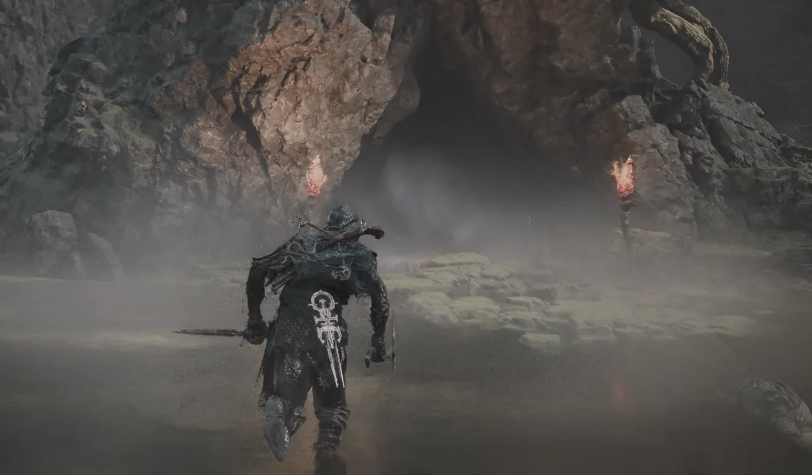
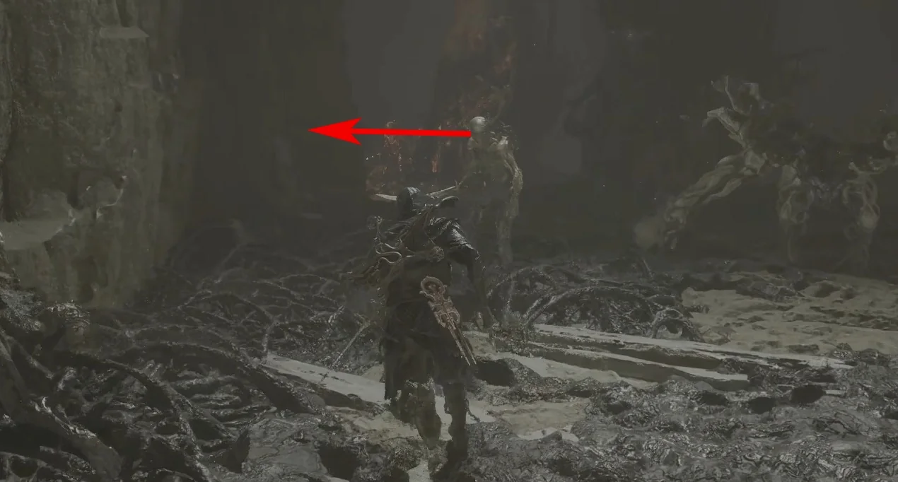
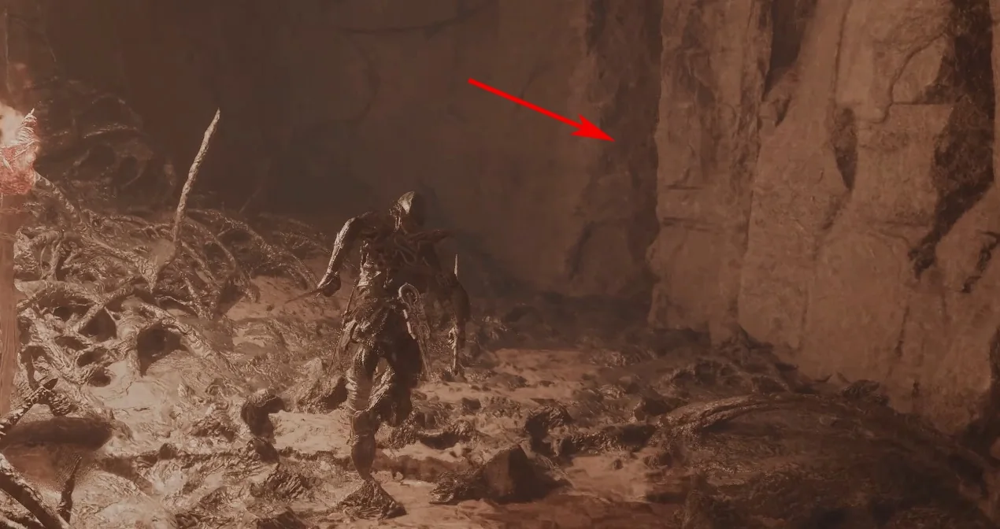
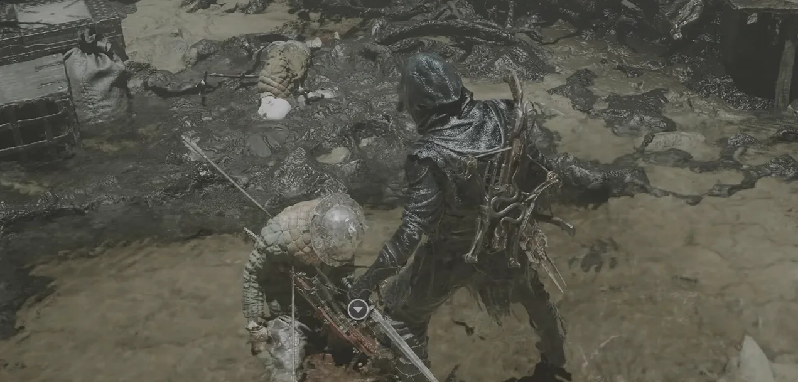

Sidearm acquisition · Mammon
Salvaged
Trebuchaxe
Salvaged Trebuchaxe is found on a corpse in the Ravaged Hideout. A rock fissure on the route opens only after the Bloodcursed Lithopod is defeated.
- Region
- Mammon
- Location
- Ravaged Hideout
- Type
- Sidearm

Route 01Start from Gloomshade Grove Beacon. The target is Ravaged Hideout, south of the Beacon.
Route 02Enter Ravaged Hideout and continue straight. At the marked point, take the upper-left route.
Route 03Use the narrow rock fissure on the right. It becomes available after you defeat the Bloodcursed Lithopod.
Route 04Inspect the corpse at the end of the passage to collect Salvaged Trebuchaxe.